Primary UX Designer
Submission for CreateRU, a designathon hosted by Rutgers’ design club
Interaction design, UX design, UX research
Figma, Google Forms
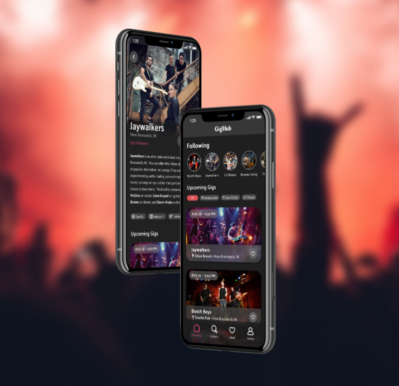
The challenge for this design competition was “design for your local community.” We brainstormed aspects of life that could be improved in our community, which was New Brunswick, NJ and Rutgers University.
We eventually landed upon an important part of our community that had big opportunities, yet lacked a lot of support: the underground music scene.
New Brunswick, NJ has a very vibrant underground music scene. There are countless bands and artists in the area always creating and performing music.
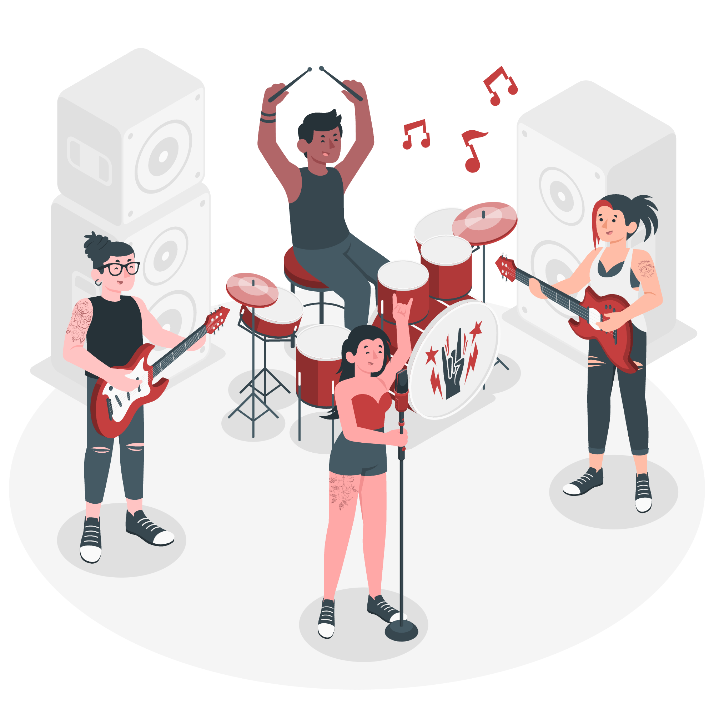
On the other hand, there is a huge population of people looking to have fun on the weekends, be social, and listen to new music. Tens of thousands of college students live at Rutgers at any given moment, and, of course, would love to have something fun to do on a Friday night.
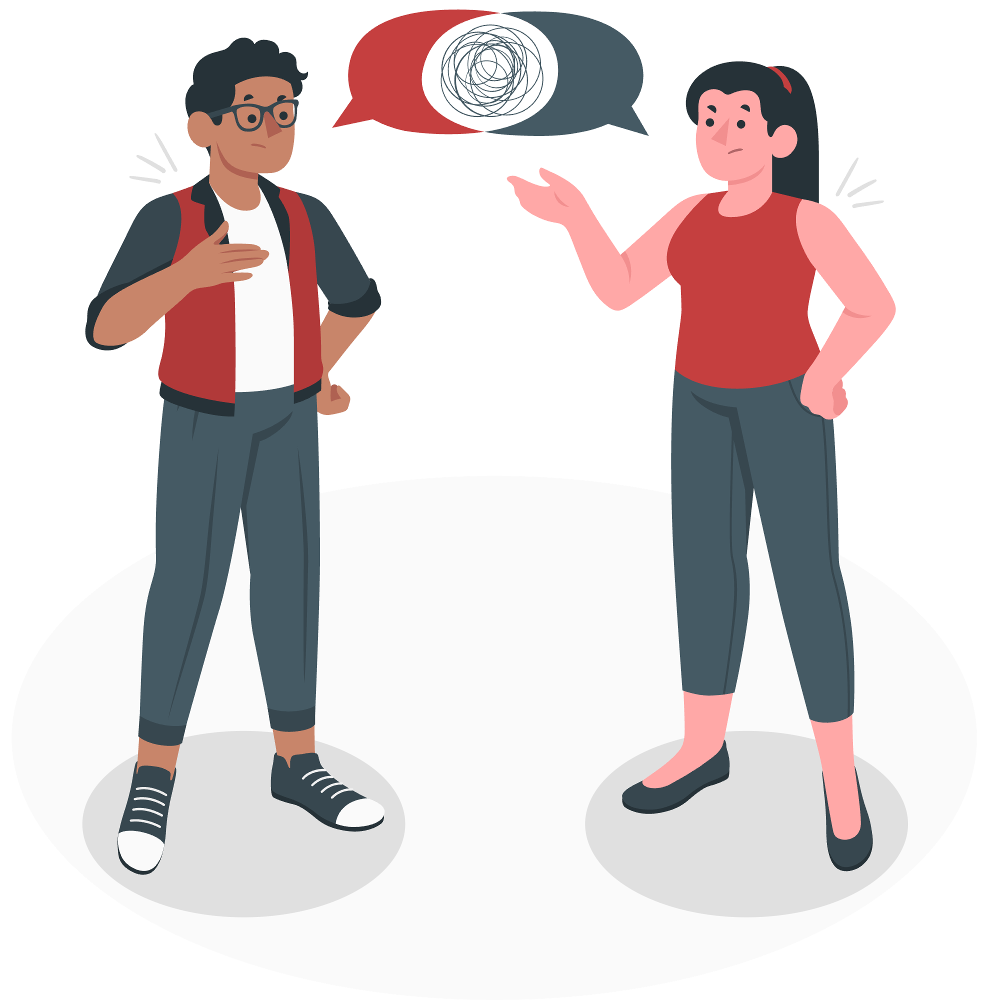
However, there is a disconnect between these two parties. There is no simple way for people to find any information regarding shows and gigs, and no easy way to get the word out about them.
We saw a great opportunity here - an opportunity to connect these two parties. A way to get bands and musicians the audience and shows they dream of, while giving everyone else a great way to spend weekend nights out, allowing them to meet new people and discover new music.
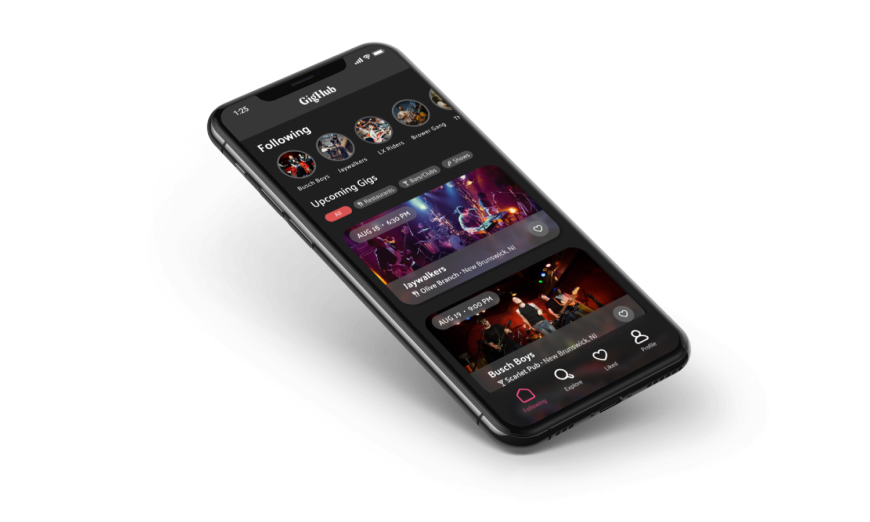
An app to serve as a hub for the local music scene, which can help users find shows and new music to enjoy while giving artists exposure and a following.
As the drummer in a band myself, I was in a good position to understand a lot of the goals users would have when using an app like this. I talked with my fellow band members, interviewed members of other bands, and finally discussed with local students to find out what features would benefit each group the most, and what their goals would be.
Here are some important moments in our conversations:
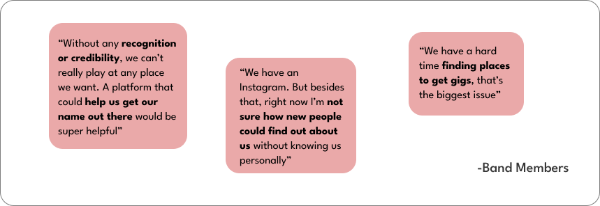
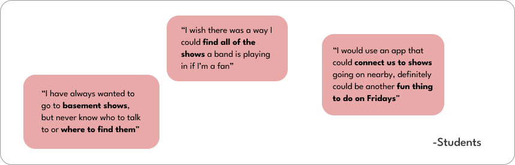
To summarize, students really liked the idea of an app that could show them shows to attend, as well as expose them to new music. Currently, many didn't know much about the local music scene but wanted to learn more. Band members would find this very helpful as it is a good way to market themselves and have all of their information in one place, and to get recognition and an audience at gigs and other shows.
So, all in all, this is a win-win-win.
It’s a win for the average person, as they can find shows to attend for a fun night out, and to discover new music.
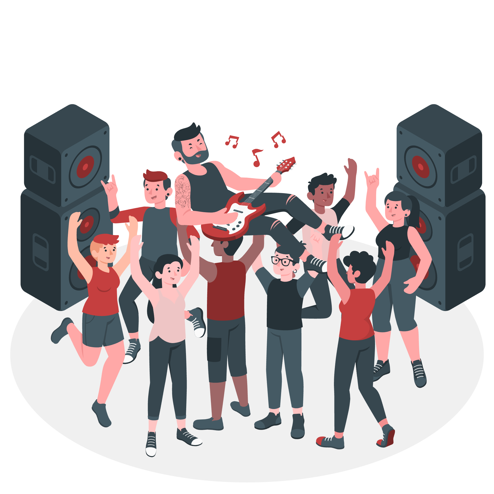
It’s a win for restaurants and other establishments, as gigs advertised on the app would attract a crowd, therefore more customers, and more business.
It’s a win for bands and musicians, as they can get their name out there, and have people discover their music and attend their shows and gigs. Then, having a bigger following could give them more opportunities, like higher-class venues.
After a few iterations on designs, with musicians and students testing and giving feedback on prototypes, we were able to finish with these final designs.
The home screen is where users can keep up to date with their favorite artists. This screen allows users to see the gigs they are most interested in at a glance, and view profiles of musicians they follow.
Gig locations are split between 3 categories: restaurants, bars/clubs, and shows. This gives a glimpse into what kind of experience the event could be.
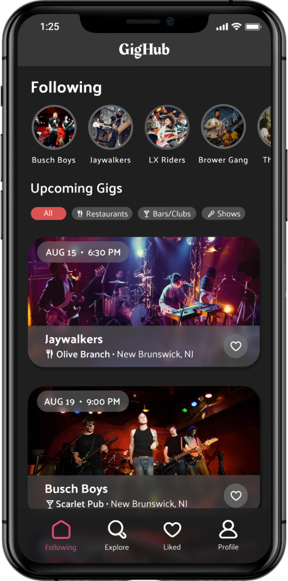
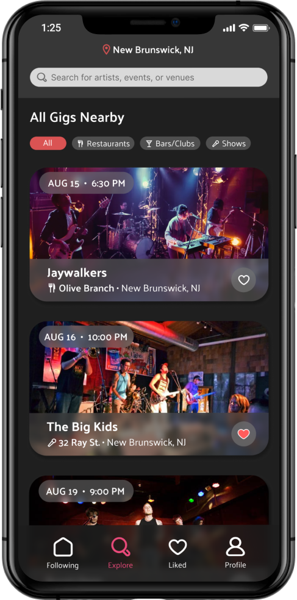
The explore screen shows users all gigs nearby, from soonest to latest. This page makes it very easy to feel out the local scene, and see what kinds of musicians are nearby.
The liked gigs screen lets users easily see all the gigs they liked, to keep track of ones they would be interested in going to.
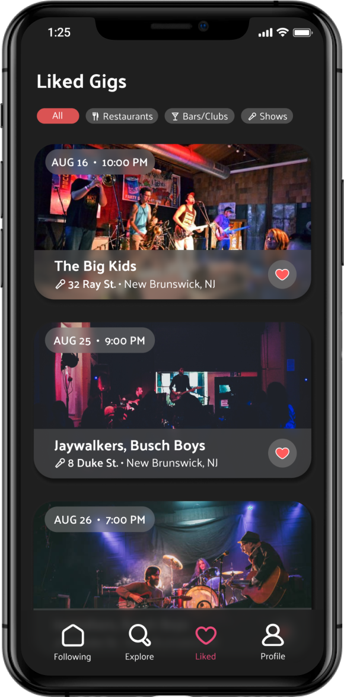
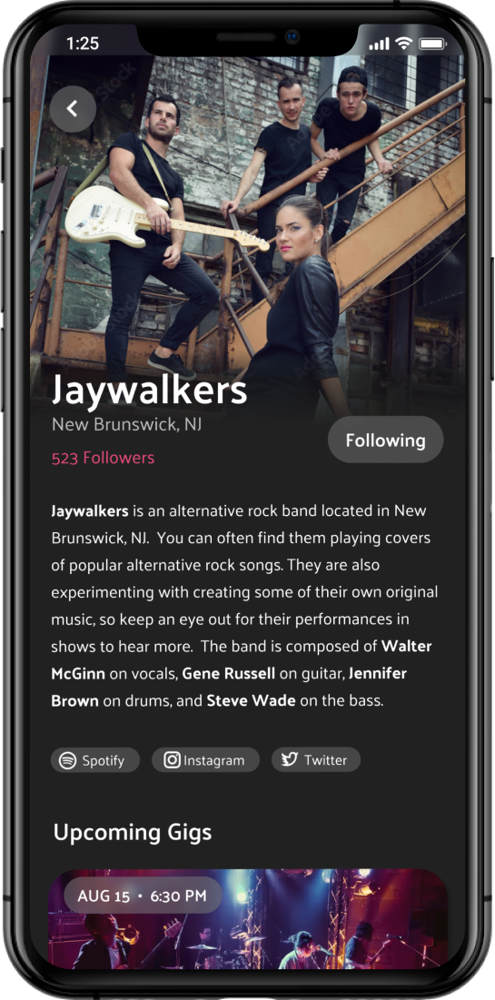
Tapping on an artist's name or profile picture brings the user to their profile. Their profile page serves as a promotional platform for each artist, and it contains a bio, pictures, and their upcoming gigs.
Tapping on a gig in a list will bring the user to the gig info page, where the user can learn all they need to know about the event. Using the "interested" button can let all parties involved know how how big of a crowd to expect.
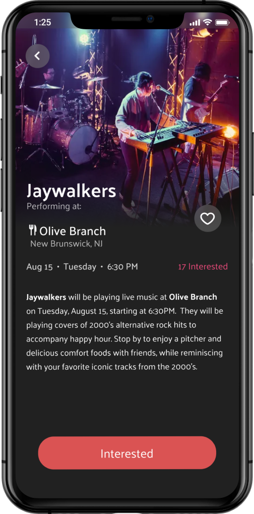
In-depth user research was new to me for this project. Interviewing various people and just having conversations about their hardships and experiences was something I was learning as I went, but I feel that I did a good job of fully understanding the problem. I then learned to translate these findings into features that benefitted all parties.
As this was a time-constrained project for a designathon, I had to learn to brainstorm and build on ideas under pressure. I had to know when it was time to move onto the next steps, and not spend too long on “perfecting” things when they definitely serve their purpose as they are.
My solution helps music-lovers discover local talent, as well as new music to enjoy. It also gives people a fun activity for a night out. These musicians also benefit from this app, as they have a space to promote themselves, and can attract larger crowds if they perform.
Given more time to develop and launch this app, I would, again, speak with band members and locals to confirm that it really helps connect the community to this local talent. Success would mean that local music would become a much more viable and common activity for a fun night out. Musicians would be able to start their career and get a following much easier, and it could be a much more reliable side gig or job.